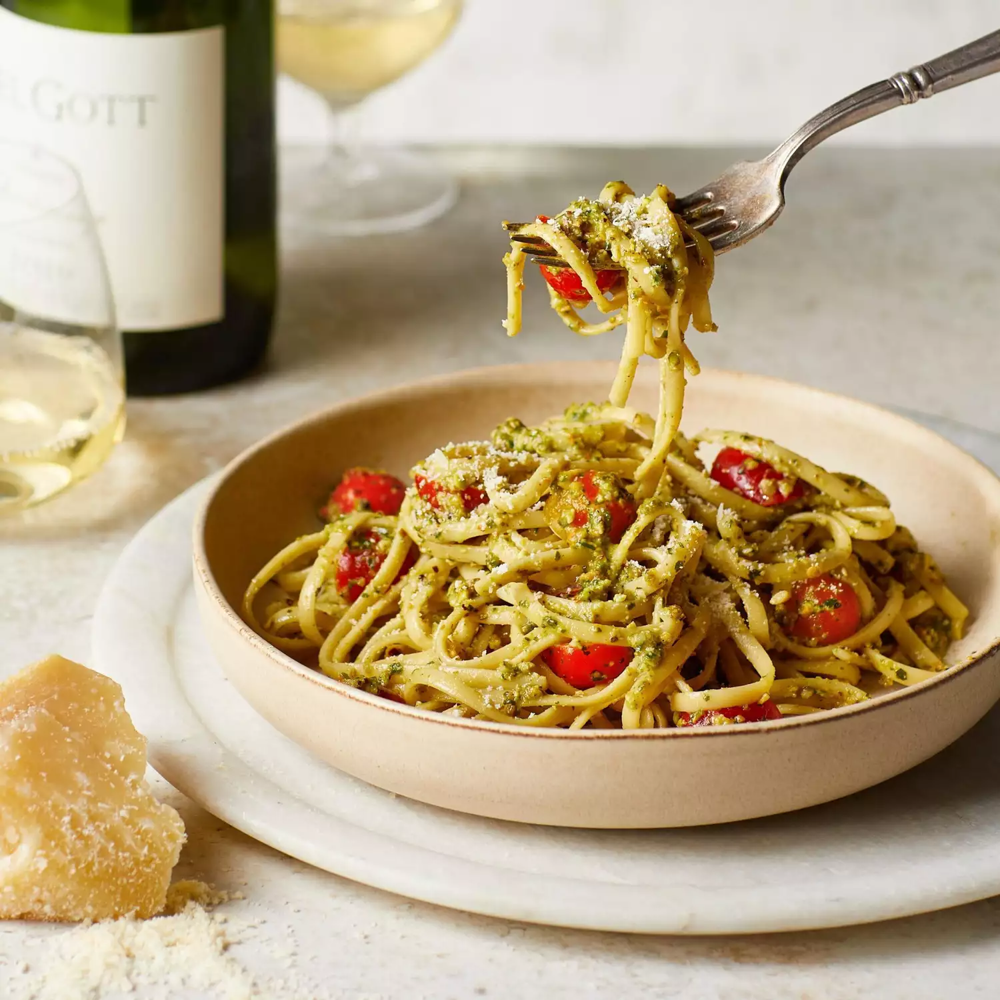

Pasta

Description
This is a basic paneer butter masala recipe that you get in most Indian restaurants.
This dish goes well with either rice or naan.
Ingredients
- ½ cup vegetable oil
- ½ pound paneer
- 1 teaspoon ginger paste
- 1-2 tablespoons of salt
- 1 (8 ounce) can tomato sauce
- ½ teaspoon white sugar